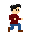
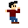
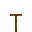
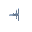

This is a mini game which was developped for the github game off 2020
In this game your goal is to shoot yourself at the moon using a big ass cannon
In order to do so you'll have to clim, slide, grapple on the roofs of the city to find the launch site
Try not to fall, otherwise you won't be able to take off
Two control variants exists, one for qwerty keyboards, one for azerty keyboards
Move around |
|
You can use Q/D (azerty) or A/D (qwerty) to move left and right |
 |
Use Z (azerty) or W (qwerty) to jump |
 |
Sliding |
|
When you find poles, you'll see cables in between, you can hook on these to start sliding, just jump on it |
 |
Climbing |
|
You'll find ladders on the buildings, these can be climbed, simply get close enough to them and you'll start climbing right away |
|
Once you've reached the top of the ladder keep going up to jump |
|
Once you've reached the bottom of the ladder keep going down to let yourself go |
|
Using the grapple |
|
You can use the grapple at any time, simply aim with the mouse at where you'd like to go and clik to get there. |
|
Your grapple must reach some part of the building, then it'll start pulling you toward where it hooked |
 |
Almost all assets were made just for the game except for two:
font: the font used on this page was taken from here
music: The bakcground music you hear was taken from here